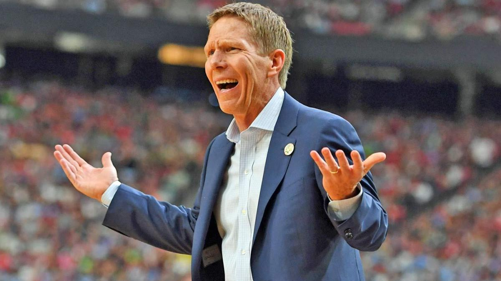

Mark Norman Few (born December 27, 1962) is an American college basketball coach who has been the head coach at Gonzaga University since 1999. He has served on Gonzaga's coaching staff since 1989, and has been a constant on the sidelines throughout a period that has seen the Bulldogs rise from mid-major obscurity to consistent NCAA Tournament contenders. During his tenure as head coach, Few has led the Bulldogs to the NCAA Tournament every season (except 2019–20, when the team had secured an automatic bid but the tournament was canceled), a stretch that has garnered the Bulldogs recognition as a major basketball power despite playing in a mid-major conference...